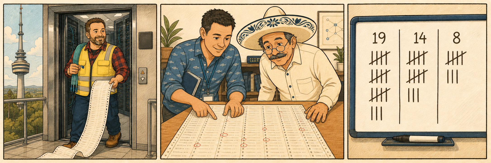
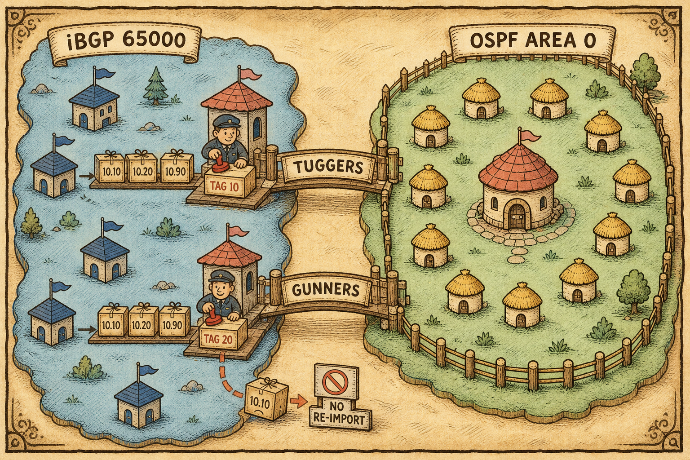

The Sites
In which every site the Department owns is finally live — and a second organisation arrives at the fence.

The Department's shape is unchanged and, for the first time, fully lit. Telstra Tower in Canberra remains the headquarters, deliberately placed centrally between the two data centres so the office, Tuggers and Gunners can fail independently. Tuggers is primary DC and overlay hub one; Gunners is secondary DC and hub two; fibre runs between them. Both hubs now do three jobs at once: dial-up server for the overlay, ASBR terminating the Fisheries OSPF domain, and next-hop rewrite point for everything the border imports.
Brisbane is live. The mpls_gateway metadata mapping was supplied in EP-15, the orphaned MPLS member was removed rather than worked around, and the site came up clean — four overlays, iBGP to both hubs. Sydney keeps its local breakout; Perth, Adelaide and Darwin are unchanged spokes, though Darwin now carries a deliberate exception in the peering design rather than an accidental one in the routing table.
The Fisheries Compliance Division is the season's other resident: eleven sites and an OSPF area 0 with its core at Canberra. The core is already joined — IPsec tunnels to both hubs, adjacencies up, redistribution flowing under policy. The eleven sites themselves transfer on 1 September, four weeks out.
| Site | Role | State | Last changed |
|---|---|---|---|
| Telstra Tower, Canberra | Headquarters — exec, NOC/SOC, main user floor | Live | — |
| Tuggers | Primary DC · hub 1 · ASBR · HA cluster | Live | EP-18: policy decomposed, local-in added |
| Gunners | Secondary DC · hub 2 · ASBR · HA cluster | Live | EP-18: policy decomposed, local-in added |
| Sydney | Satellite · local breakout · hosts 10.60.20.0/24 | Live | EP-12: breakout template-owned |
| Perth | Spoke · 4 tunnels · compliance feed | Live | EP-11: encrypted |
| Adelaide | Spoke · 4 tunnels · standard build | Live | EP-07: ZTP |
| Darwin | Spoke · 4 tunnels · explicit BGP neighbour (contractor VLAN carve-out) | Live — legacy static removed | EP-14 removal · EP-17 explicit peer |
| Brisbane | Spoke · 4 tunnels · MPLS via port4 | Live — unblocked | EP-15 |
| Fisheries core, Canberra | OSPF area 0 core · static spoke to both hubs · own SD-WAN over its two tunnels | Connected | EP-14 design · live by EP-15 |
| Fisheries sites ×11 | Behind the Fisheries core | Transfer 1 September | Pending |
| 25 further branches | Spokes, of the thirty ordered | Deliverable without per-site peer configuration | EP-17 made this true |
The twenty-five undelivered branches used to be a configuration debt waiting to happen. Since EP-17 they are not: dynamic spoke peering means a new branch that boots, calls home and receives its templates peers with both hubs without anyone editing a hub. Delivery is now a logistics event, not a change window.
The Underlay
In which the physical estate is quiet, and the noise turns out to be forty-one routes typed on top of it.
The physical layer is the stable one. Tuggers runs port1 on ISP1 at 500Mb and port2 on ISP2 at 200Mb in wan1-zone, volume load-balance-mode at weights 5:2, owned by a DC-scoped SD-WAN template. The branch estate is served by SD-WAN_Branch-Standard, with hardware variation absorbed by installation targets rather than template forks.
| Member | Zone | Where | Installation target |
|---|---|---|---|
port1 — ISP1 | wan1-zone (Tuggers) / internet (branch) | Tuggers 500Mb; every branch | Empty — all devices |
port2 — ISP2 | wan1-zone (Tuggers) / internet (branch) | Tuggers 200Mb; every branch | Empty — all devices |
overlay1–overlay4 | overlay | Every overlay-attached site | Empty — wizard-authored |
port4 — MPLS | MPLS | Sydney, Brisbane — both live | Grp-MPLS-Branches |
port5 + Sydney-Breakout service | local breakout | Sydney only | Sydney |
| Fisheries core tunnels ×2 | Fisheries core's own SD-WAN, with health checks | Fisheries core → each hub | — outside the branch template |
Underneath all of this sit forty-one legacy hand-typed static routes, uncommented, outside template control, several pointing at next hops that no longer exist — one at a gateway on a VLAN decommissioned last winter, still installed and still winning. A static route checks only that its outgoing interface is up. It has no mechanism for noticing it has become wrong.
| Triage class | Count | Disposition |
|---|---|---|
| Removable — something else already provides the prefix | 19 | Remove one at a time, evidence captured either side. First pulled 14:20 with no effect; the second pulled 14:35… |
| Load-bearing — nothing else provides the prefix | 14 | Retain under link monitor with update-static-route enable, probe targets placed beyond the gateway where the far side permits; replace with dynamic advertisement wherever a peer exists |
| Fisheries-related | 8 | Deferred until after the 1 September cutover |
Return-path risk ahead of the cutover. Deletion is safe only if something else already provides the prefix — and because the static is winning, the fallback is invisible in the routing table. The candidates live in the routing database, not the table: the table shows winners, the database shows everyone who applied.
Two Kinds of Truth
Season 3 taught the estate to distrust the routing table's silence; Season 4 opens by naming why. Every entry in the FIB is a claim, and claims come in exactly two kinds. A dynamic route is re-checked continuously — session alive, advertisement present, next hop resolvable — and disappears on its own when any condition fails. A static route is checked once, by a human, and never again; the only thing it tests is whether its outgoing interface is up. It is an assertion, not reachability, and it is ranked above every route that is actually verified.
The Overlay
In which four tunnels carry two routing domains, and the hub interface stops pretending to be point-to-point.
The overlay address space remains 10.200.0.0/14, with each hub-transport pair owning a /24 of tunnel addressing. Nothing about the four Department overlays changed in Season 3 — what changed is what rides on them, and who else now dials in.
| Overlay | Hub | Transport | Tunnel subnet | Role in the rule |
|---|---|---|---|---|
overlay1 | Tuggers | ISP1 (port1) | 10.201.1.0/24 | Priority |
overlay2 | Tuggers | ISP2 (port2) | 10.202.1.0/24 | Priority |
overlay3 | Gunners | ISP1 (port1) | 10.203.1.0/24 | Fallback |
overlay4 | Gunners | ISP2 (port2) | 10.204.1.0/24 | Fallback |
Branch loopback pool 10.255.1.0/24 — one loopback per branch, Darwin at 10.255.1.9. A summary route for the pool points at the overlay zone, which is what recursive next-hop resolution rides on. Pool sizing at full estate scale remains an open question. | ||||
How the tunnels are built
| Setting | Hub end | Branch / Fisheries-core end |
|---|---|---|
| Tunnel type | Dynamic — dial-up server | Static — the spoke initiates. The Fisheries core joins as a static spoke like any branch |
net-device | disable — many tunnels collapse onto one interface | enable |
| Peer identity | Matches on local ID | Local ID set; remote-gw names the hub's public address per transport |
| Tunnel addressing | exchange-interface-ip in use | |
| Segmentation | network-overlay with a distinct network-id per overlay — a runtime guard against cross-overlay traffic, not an addressing control | |
| OSPF on the Fisheries tunnels | Network type point-to-multipoint — because net-device disable makes point-to-point a false description of the link | Type must match; the default timers differ (30/120 vs 10/40), so a mismatch never reaches Full |
| Failure detection | BFD on both Fisheries adjacencies — sub-second detection of dead. BFD detects dead, never degraded | |
| ADVPN | Still deliberately disabled — Season 6. Every spoke-to-spoke flow hairpins through a hub | |
OSPF's only liveness test is whether a neighbour answers hellos. A tunnel at 400ms and 8% loss answers them perfectly — the adjacency stays Full, the cost never changes, SPF never reruns, the route never withdraws. That is why both Fisheries tunnels are SD-WAN members with health checks at the Fisheries core: path quality is judged by SLA, because neither OSPF nor BFD can see degradation.
The Control Plane
In which the hubs stop keeping a guest list, and preference becomes something the Department writes down.
Routing across the overlay is iBGP in private AS 65000, sessions on loopbacks, next hops resolved recursively through the overlay zone via the loopback pool summary, ibgp-multipath enabled so both hubs sit in every spoke's FIB. Two Season 3 additions changed its character entirely: next-hop-self at both hubs, and dynamic spoke peering.
Next-hop-self exists because of a real outage: Fisheries prefixes redistributed into iBGP carried the Fisheries core's tunnel transit address as their next hop, spokes had no route to those transit subnets, recursive resolution failed, and Brisbane saw two paths both marked (inaccessible) with no best path. Both hubs now rewrite the next hop to their own loopback for all iBGP neighbours, so everything the border imports resolves through the summary every spoke already has.
Dynamic peering replaced fifty prospective hand-written peer blocks with one: GRP-SPOKES carries remote-as 65000, update-source loopback0, next-hop-self, route-map-out and soft-reconfiguration, and a neighbor-range 10.255.1.0/24 admits any peer arriving from inside the branch loopback pool. Darwin is the exception that proves the design: carved out as an explicit neighbour at 10.255.1.9 with its own RM-DARWIN-OUT for the contractor VLAN, inheriting nothing — exceptions are expressed as explicit entries that win on precedence, never by narrowing the range.
Once peering is dynamic, the hub no longer knows who should be peering — a branch that never connects is invisible to BGP. That inventory authority was deliberately relocated to FortiManager's device list. It was not lost; it was moved, and everyone knows where it lives.
Policy in production
| Object | What it does | Where |
|---|---|---|
RM-SPOKE-OUT-FISHERIES-PREF | Rule 1 matches the preferred range and sets local preference 200 (raise at the preferred hub, never lower at the other); rule 2 permits all | route-map-out on all spoke neighbours, via GRP-SPOKES |
PL-FISHERIES-COMPLIANCE | 10.90.0.0/16 ge 17 le 32 — corrected after the unbounded /16 entry matched nothing and silently suppressed 10.90.20.0/24 outbound | Matched at Tuggers to steer compliance traffic there |
PL-FISHERIES-ARCHIVE | Matches 10.90.40.0/22 so nightly replication lands at Gunners | Matched at Gunners |
PL-DEPT-TO-FISHERIES | 10.10.0.0/16 and 10.20.0.0/14 ge 15 le 32 — the agreed export scope; control-plane addressing explicitly excluded | Bounds BGP-to-OSPF redistribution at both hubs |
RM-REDIST-BGP-TO-OSPF | Matches PL-DEPT-TO-FISHERIES, sets tag 10 (Tuggers) / 20 (Gunners), seed metric 100, metric-type E2 | Both hubs, delivered as a FortiManager CLI template |
RM-DARWIN-OUT | Darwin's own outbound policy for the contractor VLAN | Explicit neighbour 10.255.1.9 |
RM-REDIST-OSPF-TO-BGP | The reciprocal tag-deny on re-import — still to be written | Both hubs, pending |
Preferring a hub with local preference does not produce two advertisements — iBGP sessions are loopback-sourced, so there is one session, one path, one next hop, and the SD-WAN members come back through recursive resolution. Preference narrows four candidate tunnels to two; it never removes the SD-WAN decision.
get router info bgp network <prefix> for BGP's belief; get router info routing-table details <prefix> for what forwards; the routing database for candidates a winner is hiding; get router info bgp neighbors <ip> advertised-routes for what a hub actually sends — the command that found the prefix-list fault.
The Border
In which two routing domains meet at exactly two places, and every crossing is stamped.

The Fisheries OSPF domain — area 0, core at Canberra — meets the Department's iBGP at Tuggers and Gunners only. Branches remain iBGP-only and form no OSPF adjacencies. Two borders means two places an incident investigation has to visit, instead of eleven.
Outbound (Department into Fisheries): redistribution bounded by PL-DEPT-TO-FISHERIES, advertised as E2 externals at equal cost, seed metric 100, so both hubs advertise identically and both stay in the Fisheries FIB — E2 carries the seed metric unchanged, where E1 would add internal cost and break the equality. rfc1583-compatible is enabled, which makes external route selection cost-only and is what permits external ECMP at all. Tags 10 and 20 mark which hub exported each prefix.
Inbound (Fisheries into the Department): imported prefixes are rewritten to the hub's own loopback next hop and carried as ordinary iBGP. The safety net for the loop — a prefix crossing at one hub and re-importing at the other with a lower distance — is layered: the per-hub tags exist to be denied on re-import, and OSPF external distance is raised above 200 at both hubs so that even a filter failure cannot let an external outrank the overlay. The tag-deny itself, RM-REDIST-OSPF-TO-BGP, remains unwritten — the distance raise is currently doing the whole job.
| Traffic | Who decides the hub | Mechanism |
|---|---|---|
Compliance portal — 10.90.20.0/24 | BGP — deterministic, for the auditors | Local preference 200 raised at Tuggers |
Archive replication — 10.90.40.0/22 | BGP — moved off the congested path | Local preference 200 raised at Gunners |
The rest of 10.90.0.0/16 | SD-WAN — equal-cost, judged by SLA | ibgp-multipath keeps both hubs in the FIB |
A well-meant tidy-up consolidated PL-FISHERIES-COMPLIANCE into a bare 10.90.0.0/16 with no ge/le bounds — which matches only a prefix advertised as exactly /16, and therefore never matched the /24. The route-map fell through to its implicit deny and the prefix was silently suppressed outbound. Only branches whose sessions predated the edit still had it, so the fault presented as a peering problem. A prefix-list entry without bounds matches one prefix length, not a range.
The Inspection Regime
In which the Department writes its first security profiles, and learns what never touches the policy table at all.
Eighteen episodes in, the first security profiles arrived — at the border, where they belong. The single broad Fisheries-to-DC policy was decomposed into three policies at both hubs, each shaped by what the traffic actually is, with one recorded trade for a legacy application.
| Policy | Mode | Profiles |
|---|---|---|
| HTTPS to the two application servers | Proxy | Protecting SSL Server — using the application server's own certificate and key — plus AV and IPS |
| SMB to the file server | Proxy | AV, IPS |
| DNS to the resolvers | Flow | IPS — no SSL profile |
| Legacy application on TCP/8443 | Flow | IPS only — a recorded trade, not an oversight |
| No web filtering on any Fisheries policy. The three policies are decided but not yet built or installed. | ||
A BGP session from a branch loopback to the hub's loopback0 terminates on the device. It is local-in traffic: it never touches the firewall policy table and can never carry a security profile. The estate's first local-in policy now permits and logs BGP from the branch loopback pool to hub loopback0 — making the control plane's admission explicit instead of implicit. Admission is still granted by source address at both the BGP and firewall layers; identity as an admission mechanism is a Season 5 question.
One posture decision joined it in EP-19: loose RPF on hub interfaces carrying overlapping prefixes from two hubs. Strict RPF asks whether the best route to the source is out the arrival interface, which asymmetric two-hub return paths legitimately fail; loose asks only whether any route to the source exists, retaining the anti-spoofing property without punishing asymmetry. And RPF is only the first thing asymmetry breaks — the second is stateful inspection at a device that never saw the handshake, and loosening RPF does nothing about that one.
The Management Plane
In which the device database becomes the second place a deleted route can hide.
FortiManager's model is unchanged and load-bearing: ZTP and blueprints for arrival, template and ADOM ownership, metadata variables, template groups and installation targets, Config Status as the drift indicator, Install Preview as the device-database-to-running-config diff, and the standing rule that no install runs while any target reads Out-of-Sync. Season 3 proved the rule's value the hard way: route-maps pasted directly to a hub set Config Status to Out-of-Sync and were then silently destroyed by the next unrelated install — which is why every policy object on this page was delivered as a CLI template.
Season 3 also gave the plane a new duty. Once spoke peering went dynamic, BGP could no longer answer "which branches should be up" — so inventory authority formally moved to FortiManager's device list. And Season 4 adds a warning in the other direction: the forty-one legacy statics are hand-typed and outside template control, so any removal must be reflected in the device database or the route returns at the next install.
mpls_gateway mapped for Brisbane in EP-15 — the unmapped variable that blocked the site for five episodes, closed.Department Topology — Current as of EP-19
Every Department site live. One neighbouring domain at the fence. Forty-one promises on a printout.
🏢 Headquarters
Exec, NOC/SOC, user floor
Resilient to both DCs
⚓ Data Centres · Hubs · ASBRs
HA cluster · next-hop-self
port1 500Mb / port2 200Mb, 5:2
Redistribution tag 10 · local-in BGP
Loose RPF posture
HA cluster · next-hop-self
ISP1 + ISP2 dial-up servers
Redistribution tag 20 · local-in BGP
SD-WAN fallback
🐟 Spokes
4 tunnels + port4 MPLS
port5 local breakout
hosts 10.60.20.0/24
compliance feed
encrypted since EP-11
standard branch build
Explicit neighbour 10.255.1.9
RM-DARWIN-OUT, contractor VLAN
Legacy static removed EP-14
Unblocked EP-15
mpls_gateway mapped
Orphaned member removed
🌊 The Neighbouring Domain
Static spoke to both hubs
P2MP + BFD adjacencies
Own SD-WAN, health checks
Transfer 1 September
8 related statics deferred
Deliverable with no per-site
peer configuration
Two decision layers share the traffic. BGP local preference owns two Fisheries ranges deterministically — compliance to Tuggers, archive to Gunners. SD-WAN owns everything else, choosing among whatever equal-cost next hops the FIB offers. The FIB decides who is in the room; the rule decides who gets picked — and preference only narrows the room, it never closes it.
What Is Still Wrong
The honest column. Every entry here is a live consequence, not a wish list.
| Item | Consequence today | Status |
|---|---|---|
| The Sydney application returning stale data | Reported healthy and responsive at 14:36, one minute after the second static removal — as though talking to something that should no longer exist. | Open incident — EP-20's opening |
| 19 removable legacy statics | Two pulled; seventeen remain. One route at a time, evidence captured either side. | In progress |
| 14 load-bearing statics | Not yet bound to link monitors; still checked only by "interface up". | Approved, not built |
| 8 Fisheries-related statics | Untouchable until after the 1 September cutover. | Deferred |
RM-REDIST-OSPF-TO-BGP — the reciprocal tag-deny | The re-import loop is currently held closed only by the raised OSPF external distance. | Not written |
| The three Fisheries security policies | Decided at both hubs; the border still runs without them. | Not built or installed |
| Removing hand-typed config safely | Any on-box removal not reflected in the device database returns at the next install. | Standing hazard |
| Contractor site-level isolation | Contractors sharing one ADOM can see each other's devices. | Deferred — Season 5 |
| Identity as an admission mechanism | BGP and firewall admission still granted by source address alone. | Deferred — Season 5 |
| Loopback pool sizing at full scale | Comfortable now, unproven at thirty-plus branches. | Parked |
| ADVPN | Every spoke-to-spoke flow still hairpins through a hub. | Deliberately deferred — Season 6 |
"Pulled the first one at 14:20, mate — not a peep. Pulled the second at 14:35, and a minute later Sydney's talkin' to a ghost. Somethin' out there answered, and it bloody well shouldn't exist." — Racks, 14:36 Monday
The Flip-Card Wall
Answer out loud before you flip. A correct answer after peeking doesn't count — house rules.
An assertion, not reachability. The only test is that the outgoing interface is up — no ARP, no probe, no reachability check. A static route can only become wrong silently, because it has no mechanism for noticing.
update-static-route enable verify — and what does it still not verify?That the next hop answers. It upgrades the test from "interface up" to "gateway responds" — but it is still binary (dead, not degraded) and still next-hop-scoped: it never verifies the destination. Place the probe target beyond the gateway wherever the far side permits.
The routing database, not the table. The table shows winners; the database shows every candidate that applied. A protocol's own table — including BGP's — cannot report a defeat that happened after it handed over its best path.
Nothing directly — you only influence it. Each direction is selected independently, by different devices, using different information. The lever over a return path is what you advertise and to whom. The session-table fact is about one device, not a path: every device between the endpoints that holds no session does its own lookup.
RPF at the arriving interface, and stateful inspection at the device that never saw the handshake. Strict RPF asks whether the best route to the source is out the arrival interface; loose asks whether any route to the source exists, keeping anti-spoofing. Loosening RPF fixes only the first mechanism — and an RPF drop leaves no traffic log.
Local preference is advertised, so it reaches branches that don't exist yet. Weight is never advertised; AS-path prepend is meaningless inside one private AS and compared after local preference anyway. Raise to 200 at the preferred hub — lowering at the other makes the default value a winner, which is a policy nobody wrote.
10.90.0.0/16 with no ge/le. Does it match 10.90.20.0/24?No. Without bounds it matches only a prefix advertised as exactly /16. The route-map rule finds no match, falls through to its implicit deny, and the /24 is silently suppressed — visible only in advertised-routes, and only to sessions established after the edit.
Redistribution carried the OSPF next hop into BGP, and iBGP does not rewrite next hops in transit. Spokes had no route to the Fisheries transit subnets, so recursive resolution failed and both paths were disqualified. Fixed structurally with next-hop-self at both hubs, so imports resolve through the loopback pool summary every spoke already holds.
net-device disable collapses many tunnels onto one interface, so point-to-point is a false description of the link. Types must match at both ends — and because default timers differ (30/120 vs 10/40), a mismatch never reaches Full via the timer mismatch alone.
Nothing. The tunnel still answers hellos, so the adjacency stays Full, cost is unchanged, SPF never reruns, the route never withdraws — and BFD detects dead, not degraded. That is why both Fisheries tunnels are SD-WAN members with health checks: only SLA measurement sees quality.
E2 carries the seed metric unchanged, so both ASBRs advertise identically and both stay in the Fisheries FIB at equal cost. E1 adds the internal cost to each ASBR, breaking the equality. rfc1583-compatible makes external selection cost-only, which is what permits external ECMP.
None — it never touches the policy table. The session terminates on the device, so it is local-in traffic and can never carry a security profile. It is governed by a local-in policy, which in this estate permits and logs BGP from the branch loopback pool to hub loopback0.
An explicit neighbour entry at 10.255.1.9 with its own route-map, inheriting nothing — explicit config wins on precedence over the neighbor-range. Never by narrowing the range: that would be enumerating state again, which is exactly what dynamic peering was built to stop.
A direct paste sets Config Status to Out-of-Sync, and the pasted objects are then silently destroyed by the next unrelated install. The device database, not the box, is the source of truth — which also means removals must be reflected there, or the removed config returns.
The Estate in One Page
The compressed version. Everything Season 4 does next stands on all of it.
port1 500Mb / port2 200Mb at 5:2 volume mode. One branch SD-WAN template; variation lives in installation targets. Forty-one legacy statics triaged 19 / 14 / 8 on top of it.10.200.0.0/14. Hubs dial-up with net-device disable; spokes and the Fisheries core dial in. P2MP + BFD on the Fisheries adjacencies. ADVPN off by choice.GRP-SPOKES + neighbor-range 10.255.1.0/24, next-hop-self at both hubs, ibgp-multipath, recursive resolution via the loopback pool summary. Darwin explicit at 10.255.1.9.rfc1583-compatible, OSPF external distance raised above 200. Reciprocal tag-deny still unwritten.10.90.20.0/24 (Tuggers) and 10.90.40.0/22 (Gunners). SD-WAN owns the rest of 10.90.0.0/16 at equal cost. Raise at the preferred hub, never lower at the other.get router info routing-table details <prefix> # what forwards, and at what distance get router info bgp network <prefix> # BGP's belief about a prefix get router info bgp neighbors <ip> advertised-routes # what a hub actually sends get router info ospf neighbor / ospf interface # adjacency state and network type diagnose sys sdwan health-check status # live latency / jitter / loss vs sla_map diagnose sys session filter / list # which interface a session is bound to diagnose debug (filtered, bounded) # reverse-path-check drop string on RPF faults # RPF drops leave NO traffic log — debug is the only witness FortiManager > Config Status → Install Preview → install, in that order
Administrative distance in this estate
| Source | Distance | Where it bites |
|---|---|---|
| Connected | 0 | — |
| Static | 10 | Fourteen load-bearing statics still outrank everything verified |
| eBGP | 20 | Not in use |
| OSPF | 110 | The Fisheries domain — internal routes |
| iBGP | 200 | The overlay. Everything the Department built. |
| OSPF external (raised) | >200 | The safety net — a re-imported external can never outrank the overlay |
Where each site differs from the standard branch
| Site | The exception |
|---|---|
| Sydney | port5 breakout + Sydney-Breakout service; member of Grp-MPLS-Branches |
| Brisbane | MPLS via port4, mpls_gateway mapped — formerly the blocked site, now standard-plus-MPLS |
| Darwin | Explicit BGP neighbour with RM-DARWIN-OUT for the contractor VLAN; inherits nothing from GRP-SPOKES |
| Perth & Adelaide | None — the standard build, which is the point |
| Fisheries core | Not a branch at all: an OSPF area 0 core joined as a static spoke, running its own SD-WAN over its two hub tunnels |
| Tuggers & Gunners | ASBRs, next-hop-self, local-in BGP policy, loose RPF, per-hub redistribution tags 10 / 20 |
How the estate got here — Season 3 and the Season 4 opener
| Episode | What changed on this map |
|---|---|
| EP-13 — OSPF Across the Estate | Darwin's legacy static diagnosed; hub-terminated Fisheries boundary approved |
| EP-14 — OSPF Over IPsec | Darwin's static removed; Fisheries design built: P2MP hub interfaces, BFD, E2 equal-cost redistribution, per-hub tags, tunnels as SD-WAN members |
| EP-15 — BGP Belief | Brisbane unblocked, orphaned MPLS member removed; next-hop-self at both hubs after the inaccessible-next-hop incident |
| EP-16 — BGP Policy Tools | First per-prefix preference: local pref 200 steering, export scope bounded, all delivered by CLI template |
| EP-17 — Loopbacks and Neighbour Groups | Dynamic spoke peering: GRP-SPOKES + neighbor-range; Darwin carved out explicitly; prefix-list bounds corrected; inventory authority moved to FortiManager |
| EP-18 — The Domain Nobody Inspected | Border policy decomposed into three; first security profiles; first local-in policy |
| EP-19 — The Routes That Came Back | Forty-one statics triaged 19 / 14 / 8; link-monitor design for the retained; loose RPF adopted; unidirectional-routing model established. Two statics pulled — and something answered that shouldn't exist |